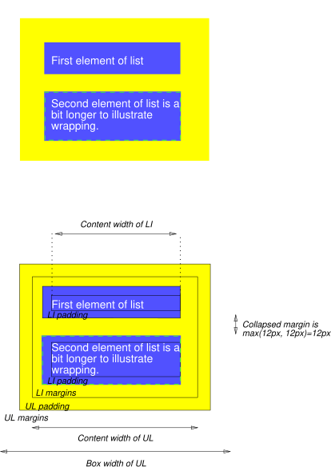

The CSS box model describes the rectangular boxes that are generated for elements in the document tree and laid out according to the visual formatting model.
Each box has a content area (e.g., text, an image, etc.) and optional surrounding padding, border, and margin areas; the size of each area is specified by properties defined below. The following diagram shows how these areas relate and the terminology used to refer to pieces of margin, border, and padding:
The margin, border, and padding can be broken down into top, right, bottom, and left segments (e.g., in the diagram, "LM" for left margin, "RP" for right padding, "TB" for top border, etc.).
The perimeter of each of the four areas (content, padding, border, and margin) is called an "edge", so each box has four edges:
Each edge may be broken down into a top, right, bottom, and left edge.
The dimensions of the content area of a box — the content width and content height — depend on several factors: whether the element generating the box has the 'width' or 'height' property set, whether the box contains text or other boxes, whether the box is a table, etc. Box widths and heights are discussed in the chapter on visual formatting model details.
The background style of the content, padding, and border areas of a box is specified by the 'background' property of the generating element. Margin backgrounds are always transparent.
This example illustrates how margins, padding, and borders interact. The example HTML document:
<!DOCTYPE HTML PUBLIC "-//W3C//DTD HTML 4.01//EN">
<HTML>
<HEAD>
<TITLE>Examples of margins, padding, and borders</TITLE>
<STYLE type="text/css">
UL {
background: yellow;
margin: 12px 12px 12px 12px;
padding: 3px 3px 3px 3px;
/* No borders set */
}
LI {
color: white; /* text color is white */
background: blue; /* Content, padding will be blue */
margin: 12px 12px 12px 12px;
padding: 12px 0px 12px 12px; /* Note 0px padding right */
list-style: none /* no glyphs before a list item */
/* No borders set */
}
LI.withborder {
border-style: dashed;
border-width: medium; /* sets border width on all sides */
border-color: lime;
}
</STYLE>
</HEAD>
<BODY>
<UL>
<LI>First element of list
<LI class="withborder">Second element of list is
a bit longer to illustrate wrapping.
</UL>
</BODY>
</HTML>
results in a document tree with (among other relationships) a UL element that has two LI children.
The first of the following diagrams illustrates what this example would produce. The second illustrates the relationship between the margins, padding, and borders of the UL elements and those of its children LI elements. (Image is not to scale.)
 [D]
Note that:
Margin properties specify the width of the margin area of a box. The 'margin' shorthand property sets the margin for all four sides while the other margin properties only set their respective side. These properties apply to all elements, but vertical margins will not have any effect on non-replaced inline elements.
The properties defined in this section refer to the <margin-width> value type, which may take one of the following values:
Negative values for margin properties are allowed, but there may be implementation-specific limits.
| Value: | <margin-width> | inherit |
| Initial: | 0 |
| Applies to: | all elements except elements with table display types other than table-caption, table and inline-table |
| Inherited: | no |
| Percentages: | refer to width of containing block |
| Media: | visual |
| Computed value: | the percentage as specified or the absolute length |
These properties have no effect on non-replaced inline elements.
| Value: | <margin-width> | inherit |
| Initial: | 0 |
| Applies to: | all elements except elements with table display types other than table-caption, table and inline-table |
| Inherited: | no |
| Percentages: | refer to width of containing block |
| Media: | visual |
| Computed value: | the percentage as specified or the absolute length |
These properties set the top, right, bottom, and left margin of a box.
h1 { margin-top: 2em }
| Value: | <margin-width>{1,4} | inherit |
| Initial: | see individual properties |
| Applies to: | all elements except elements with table display types other than table-caption, table and inline-table |
| Inherited: | no |
| Percentages: | refer to width of containing block |
| Media: | visual |
| Computed value: | see individual properties |
The 'margin' property is a shorthand property for setting 'margin-top', 'margin-right', 'margin-bottom', and 'margin-left' at the same place in the style sheet.
If there is only one component value, it applies to all sides. If there are two values, the top and bottom margins are set to the first value and the right and left margins are set to the second. If there are three values, the top is set to the first value, the left and right are set to the second, and the bottom is set to the third. If there are four values, they apply to the top, right, bottom, and left, respectively.
body { margin: 2em } /* all margins set to 2em */
body { margin: 1em 2em } /* top & bottom = 1em, right & left = 2em */
body { margin: 1em 2em 3em } /* top=1em, right=2em, bottom=3em, left=2em */
The last rule of the example above is equivalent to the example below:
body {
margin-top: 1em;
margin-right: 2em;
margin-bottom: 3em;
margin-left: 2em; /* copied from opposite side (right) */
}
In CSS, the adjoining margins of two or more boxes (which might or might not be siblings) can combine to form a single margin. Margins that combine this way are said to collapse, and the resulting combined margin is called a collapsed margin.
Adjoining vertical margins collapse, except:
Horizontal margins never collapse.
Two margins are adjoining if and only if:
A collapsed margin is considered adjoining to another margin if any of its component margins is adjoining to that margin.
Note. Adjoining margins can be generated by elements that are not related as siblings or ancestors.
Note the above rules imply that:
When two or more margins collapse, the resulting margin width is the maximum of the collapsing margins' widths. In the case of negative margins, the maximum of the absolute values of the negative adjoining margins is deducted from the maximum of the positive adjoining margins. If there are no positive margins, the maximum of the absolute values of the adjoining margins is deducted from zero.
If the top and bottom margins of a box are adjoining, then it is possible for margins to collapse through it. In this case, the position of the element depends on its relationship with the other elements whose margins are being collapsed.
Note that the positions of elements that have been collapsed through have no effect on the positions of the other elements with whose margins they are being collapsed; the top border edge position is only required for laying out descendants of these elements.
The padding properties specify the width of the padding area of a box. The 'padding' shorthand property sets the padding for all four sides while the other padding properties only set their respective side.
The properties defined in this section refer to the <padding-width> value type, which may take one of the following values:
Unlike margin properties, values for padding values cannot be negative. Like margin properties, percentage values for padding properties refer to the width of the generated box's containing block.
| Value: | <padding-width> | inherit |
| Initial: | 0 |
| Applies to: | all elements except table-row-group, table-header-group, table-footer-group, table-row, table-column-group and table-column |
| Inherited: | no |
| Percentages: | refer to width of containing block |
| Media: | visual |
| Computed value: | the percentage as specified or the absolute length |
These properties set the top, right, bottom, and left padding of a box.
blockquote { padding-top: 0.3em }
| Value: | <padding-width>{1,4} | inherit |
| Initial: | see individual properties |
| Applies to: | all elements except table-row-group, table-header-group, table-footer-group, table-row, table-column-group and table-column |
| Inherited: | no |
| Percentages: | refer to width of containing block |
| Media: | visual |
| Computed value: | see individual properties |
The 'padding' property is a shorthand property for setting 'padding-top', 'padding-right', 'padding-bottom', and 'padding-left' at the same place in the style sheet.
If there is only one component value, it applies to all sides. If there are two values, the top and bottom paddings are set to the first value and the right and left paddings are set to the second. If there are three values, the top is set to the first value, the left and right are set to the second, and the bottom is set to the third. If there are four values, they apply to the top, right, bottom, and left, respectively.
The surface color or image of the padding area is specified via the 'background' property:
h1 {
background: white;
padding: 1em 2em;
}
The example above specifies a '1em' vertical padding ('padding-top' and 'padding-bottom') and a '2em' horizontal padding ('padding-right' and 'padding-left'). The 'em' unit is relative to the element's font size: '1em' is equal to the size of the font in use.
The border properties specify the width, color, and style of the border area of a box. These properties apply to all elements.
Note. Notably for HTML, user agents may render borders for certain user interface elements (e.g., buttons, menus, etc.) differently than for "ordinary" elements.
The border width properties specify the width of the border area. The properties defined in this section refer to the <border-width> value type, which may take one of the following values:
The interpretation of the first three values depends on the user agent. The following relationships must hold, however:
'thin' <='medium' <= 'thick'.
Furthermore, these widths must be constant throughout a document.
| Value: | <border-width> | inherit |
| Initial: | medium |
| Applies to: | all elements |
| Inherited: | no |
| Percentages: | N/A |
| Media: | visual |
| Computed value: | absolute length; '0' if the border style is 'none' or 'hidden' |
These properties set the width of the top, right, bottom, and left border of a box.
| Value: | <border-width>{1,4} | inherit |
| Initial: | see individual properties |
| Applies to: | all elements |
| Inherited: | no |
| Percentages: | N/A |
| Media: | visual |
| Computed value: | see individual properties |
This property is a shorthand property for setting 'border-top-width', 'border-right-width', 'border-bottom-width', and 'border-left-width' at the same place in the style sheet.
If there is only one component value, it applies to all sides. If there are two values, the top and bottom borders are set to the first value and the right and left are set to the second. If there are three values, the top is set to the first value, the left and right are set to the second, and the bottom is set to the third. If there are four values, they apply to the top, right, bottom, and left, respectively.
In the examples below, the comments indicate the resulting widths of the top, right, bottom, and left borders:
h1 { border-width: thin } /* thin thin thin thin */
h1 { border-width: thin thick } /* thin thick thin thick */
h1 { border-width: thin thick medium } /* thin thick medium thick */
The border color properties specify the color of a box's border.
| Value: | <color> | transparent | inherit |
| Initial: | the value of the 'color' property |
| Applies to: | all elements |
| Inherited: | no |
| Percentages: | N/A |
| Media: | visual |
| Computed value: | when taken from the 'color' property, the computed value of 'color'; otherwise, as specified |
The 'border-color' property sets the color of the four borders. Values have the following meanings:
The 'border-color' property can have from one to four component values, and the values are set on the different sides as for 'border-width'.
If an element's border color is not specified with a border property, user agents must use the value of the element's 'color' property as the computed value for the border color.
In this example, the border will be a solid black line.
p {
color: black;
background: white;
border: solid;
}
The border style properties specify the line style of a box's border (solid, double, dashed, etc.). The properties defined in this section refer to the <border-style> value type, which may take one of the following values:
All borders are drawn on top of the box's background. The color of borders drawn for values of 'groove', 'ridge', 'inset', and 'outset' depends on the element's border color properties, but UAs may choose their own algorithm to calculate the actual colors used. For instance, if the 'border-color' has the value 'silver', then a UA could use a gradient of colors from white to dark gray to indicate a sloping border.
| Value: | <border-style> | inherit |
| Initial: | none |
| Applies to: | all elements |
| Inherited: | no |
| Percentages: | N/A |
| Media: | visual |
| Computed value: | as specified |
| Value: | <border-style>{1,4} | inherit |
| Initial: | see individual properties |
| Applies to: | all elements |
| Inherited: | no |
| Percentages: | N/A |
| Media: | visual |
| Computed value: | see individual properties |
The 'border-style' property sets the style of the four borders. It can have from one to four component values, and the values are set on the different sides as for 'border-width' above.
#xy34 { border-style: solid dotted }
In the above example, the horizontal borders will be 'solid' and the vertical borders will be 'dotted'.
Since the initial value of the border styles is 'none', no borders will be visible unless the border style is set.
| Value: | [ <border-width> || <border-style> || <'border-top-color'> ] | inherit |
| Initial: | see individual properties |
| Applies to: | all elements |
| Inherited: | no |
| Percentages: | N/A |
| Media: | visual |
| Computed value: | see individual properties |
This is a shorthand property for setting the width, style, and color of the top, right, bottom, and left border of a box.
h1 { border-bottom: thick solid red }
The above rule will set the width, style, and color of the border below the H1 element. Omitted values are set to their initial values. Since the following rule does not specify a border color, the border will have the color specified by the 'color' property:
H1 { border-bottom: thick solid }
| Value: | [ <border-width> || <border-style> || <'border-top-color'> ] | inherit |
| Initial: | see individual properties |
| Applies to: | all elements |
| Inherited: | no |
| Percentages: | N/A |
| Media: | visual |
| Computed value: | see individual properties |
The 'border' property is a shorthand property for setting the same width, color, and style for all four borders of a box. Unlike the shorthand 'margin' and 'padding' properties, the 'border' property cannot set different values on the four borders. To do so, one or more of the other border properties must be used.
For example, the first rule below is equivalent to the set of four rules shown after it:
p { border: solid red }
p {
border-top: solid red;
border-right: solid red;
border-bottom: solid red;
border-left: solid red
}
Since, to some extent, the properties have overlapping functionality, the order in which the rules are specified is important.
Consider this example:
blockquote {
border: solid red;
border-left: double;
color: black;
}
In the above example, the color of the left border is black, while the other borders are red. This is due to 'border-left' setting the width, style, and color. Since the color value is not given by the 'border-left' property, it will be taken from the 'color' property. The fact that the 'color' property is set after the 'border-left' property is not relevant.
For each line box, UAs must take the inline boxes generated for each element and render the margins, borders and padding in visual order (not logical order).
When the element's 'direction' property is 'ltr', the left-most generated box of the first line box in which the element appears has the left margin, left border and left padding, and the right-most generated box of the last line box in which the element appears has the right padding, right border and right margin.
When the element's 'direction' property is 'rtl', the right-most generated box of the first line box in which the element appears has the right padding, right border and right margin, and the left-most generated box of the last line box in which the element appears has the left margin, left border and left padding.